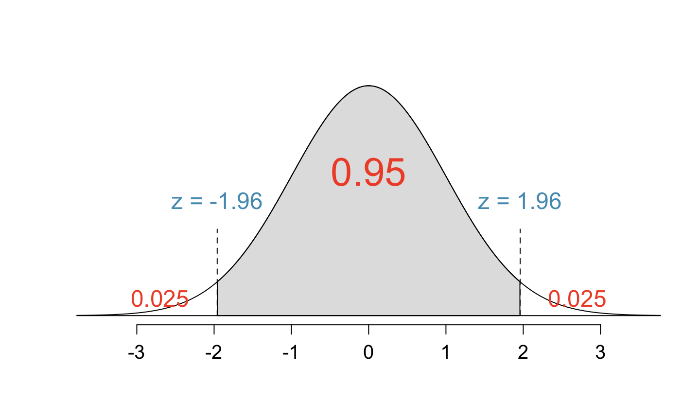
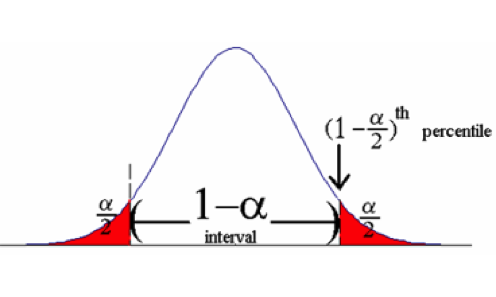
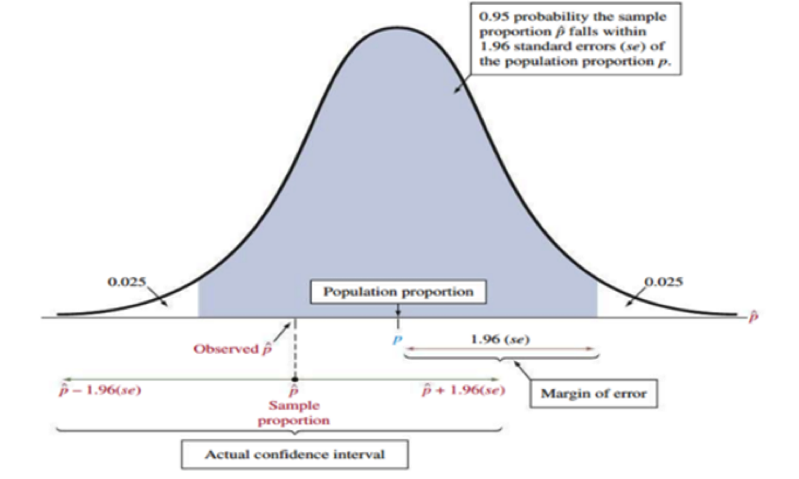
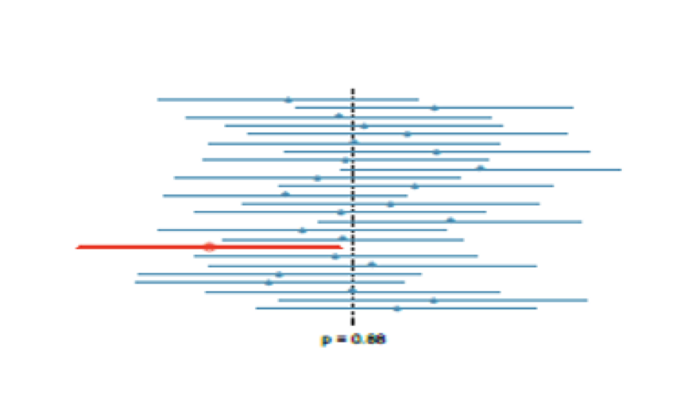
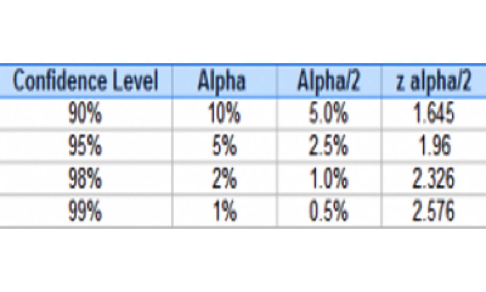
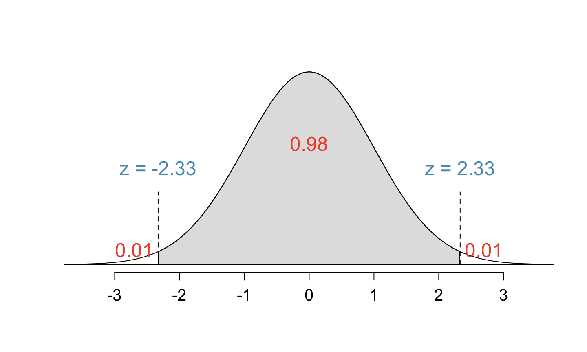

These notes use content from OpenIntro Statistics Slides by
Mine Cetinkaya-Rundel.
These notes use content from OpenIntro Statistics Slides by
Mine Cetinkaya-Rundel.
In this section, we discuss using confidence intervals to estimate the population proportion.
Construction of confidence intervals (width depends on given confidence level)
Margin of error
Interpreting confidence intervals
If we report a point estimate, we probably won’t hit the exact population parameter. If we report a range of plausible values, we have a good shot at capturing the parameter. A plausible range of values for the population parameter is called a confidence interval.
Using only a sample statistic to estimate a parameter is like fishing in a murky lake with a spear, and using a confidence interval is like fishing with a net.
We can throw a spear where we saw a fish but we will probably miss. If we toss a net in that area, we have a good chance of catching the fish.
A confidence interval is a plausible range of values so defined that there is a specified probability that the value of the interested population parameter lies within it.
The probability of the confidence interval that contains the parameter is called the confidence level – which is a number chosen to be close to 1 (usually use percentages like 90%, 95%, 99%).
Confidence intervals are interval estimates and they are built around a point estimate (value of sample proportion)
By CLT, if the conditions are met, \(\hat{p} \sim N(p, \sqrt{\frac{p(1-p)}{n}})\)
The Standard Error is \(\sigma_{\hat{p}}= S.E._{\hat{p}} = \sqrt{\frac{p(1-p)}{n}}\)
When \(p\) is unknown, we replace \(p\) by \(\hat{p}\)
\[S.E._{\hat{p}}= \sqrt{\frac{\hat{p}(1-\hat{p})}{n}}\]
\[\hat{p} ± 1.96 \times S.E._{\hat{p}}\]
Note that \((1-\alpha)100\%=95\% \implies \alpha = 0.05 \implies \alpha/2 = 0.025\)
\(z_{\frac{\alpha}{2}} = z_{0.025} = 1.96\) is the z-score that makes the upper-tail area under the standard normal distribution curve equal to \(\alpha/2\) (0.025).


Recall that a \((1-\alpha)100\%\) confidence interval for the proportion \(p\) is given by: \[\hat{p} ± z_{\frac{\alpha}{2}} \times S.E._{\hat{p}}\]
The margin of error (M.E.) of the confidence interval is:
\[M.E. = z_{\frac{\alpha}{2}} \times S.E._{\hat{p}}\]
The margin of error (M.E.) depends on the confidence level (through \(z_{\frac{\alpha}{2}}\)) and the standard error (\(S.E._{\hat{p}}=\sqrt{\frac{\hat{p}(1-\hat{p})}{n}}\)).
The confidence interval can also be written as follows:
\[\hat{p} ± M.E.\]

What does 95% confident mean?
If we draw many samples of the same size and build a 95% C.I. \(\hat{𝒑} ±𝟏.𝟗𝟔\times S.E.\) from each sample. Then, about 95% of such C.I.s would contain the true population proportion \(𝑝\).
The figure below shows twenty-five (25) point-estimates and 95% confidence intervals from the simulations relative to the population proportion p = 0.88. Only 1 of these 25 intervals did not capture the population proportion, and this interval has been marked red bolded. (Note that: 1/25=0.04, 24/25=0.96)

What does 95% confident mean? The code below performs the simulation described in previous slide.
library(tidyverse)
nsim = 25 #number of simulations to run (larger nsim will produce more accurate estimate of true confidence level)
CL = 0.95 #confidence level
p = 0.88 #population proportion (parameter)
N = 100000 #population size
pop = c(rep("success", N*p), rep("failure", N*(1-p))) #population of successes and failures
n = 100 #sample size
phat = numeric(nsim)
L = numeric(nsim)
U = numeric(nsim)
for (i in 1:nsim){
s = sample(pop, n, replace = TRUE)
phat[i] = sum(s=="success")/n
SE = sqrt(phat[i]*(1-phat[i])/n)
L[i] = phat[i] - qnorm((1-CL)/2, lower.tail = FALSE)*SE
U[i] = phat[i] + qnorm((1-CL)/2, lower.tail = FALSE)*SE
}
ci95 = data.frame(Sample = seq(1,nsim), phat, L, U)
ci95 = mutate(ci95, capture = as.factor(ifelse(L <= p & p <= U, 1, 0)))
ggplot(data = ci95, aes(x = Sample, y = phat)) +
geom_point(aes(color = capture)) +
geom_errorbar(aes(ymin = L, ymax = U, color = capture)) +
scale_color_manual(values = c('0'='red','1'='black')) +
coord_flip() +
geom_hline(yintercept = p, linetype = "dashed", color = "blue") +
labs(title = paste0(CL*100, "% Confidence Intervals")) +
theme(plot.title = element_text(hjust = 0.5))
If the confidence level is changed to 90%, would you expect the confidence interval to be wider or narrower?
Here, \(1 - \alpha = 0.90 \implies \alpha = 0.10 \implies \alpha/2 = 0.05\)
So, using R, we find \(z_{\frac{\alpha}{2}} = z_{0.05} = 1.645\)
qnorm(0.05, lower.tail = FALSE) qnorm(1-0.05, lower.tail = TRUE)
The 90% confident interval would be \(\hat{p} ± 1.645×𝑆.𝐸.\) which will be narrower than the 95% interval because the margin of error is higher for the 95% interval (\(z_{\frac{\alpha}{2}} = z_{0.025} = 1.96\)).
Practice: Find the 99% confidence interval.
qnorm(0.005, lower.tail = FALSE) qnorm(1-0.005, lower.tail = TRUE)
\(\hat{p} ± 2.58×𝑆.𝐸.\)

Answer: \(𝛼= 0.20 \implies \frac{\alpha}{2} = 0.10 \implies z_{\frac{\alpha}{2}} = 𝑧_{0.10} = 1.281552\)
Which of the below Z scores is the appropriate \(z^*\) when calculating a 98% confidence interval?
Which of the below Z scores is the appropriate \(z^*\) when calculating a 98% confidence interval?

Most commercial websites (e.g. social media platforms, news outlets, online retailers) collect a data about their users’ behaviors and use these data to deliver targeted content, recommendations, and ads. To understand whether Americans think their lives line up with how the algorithm-driven classification systems categorizes them, Pew Research asked a representative sample of 850 American Facebook users how accurately they feel the list of categories Facebook has listed for them on the page of their supposed interests actually represents them and their interests. 67% of the respondents said that the listed categories were accurate.
Estimate the true proportion of American Facebook users who think the Facebook categorizes their interests accurately.
Find the point estimate in this case
Estimate the standard error
Construct a 95% confidence interval for population proportion
Construct a 90% confidence interval for population proportion
Note that: \(\hat{p} = 0.67\) and \(n=850\)
Ans 1. The point estimate is \(\hat{p}\) = 0.67
Ans 2. The standard error is: \[{S.E. = \sqrt{\frac{p(1-p)}{n}} = \sqrt{\frac{0.67 \times 0.33}{850}} \approx 0.0161281}\]
Ans 3. The approximate 95% confidence interval is
\[ \begin{align*} \hat{p} \pm 1.96 \times S.E. &= 0.67 \pm 1.96 \times 0.016\\ &= (0.67-0.03136, 0.67+0.03136)\\ &= (0.639, 0.701) \end{align*} \] We are 95% confident that 63.9% to 70.1% of all American Facebook users think Facebook categorizes their interests accurately.
Ans 4. The 90% confidence interval is
\[ \begin{align*} \hat{p} \pm 1.645 \times S.E. &= 0.67 \pm 1.645 \times 0.016\\ &= (0.67-0.02632, 0.67+0.02632)\\ &= (0.644, 0.696) \end{align*} \] * Note that the 90% confidence interval is narrower since it has a smaller margin of error.
Which of the following is the correct interpretation of this confidence interval?
We are 95% confident that
64% to 70% of American Facebook users in this sample think Facebook categorizes their interests accurately.
64% to 70% of all American Facebook users think Facebook categorizes their interests accurately.
There is a 64% to 70% chance that a randomly chosen American Facebook user’s interests are categorized accurately.
There is a 64% to 70% chance that 95% of American Facebook users’ interests are categorized accurately.
Which of the following is the correct interpretation of this confidence interval?
We are 95% confident that
64% to 70% of American Facebook users in this sample think Facebook categorizes their interests accurately.
There is a 64% to 70% chance that a randomly chosen American Facebook user’s interests are categorized accurately.
There is a 64% to 70% chance that 95% of American Facebook users’ interests are categorized accurately.
\[\text{point estimate} \pm z_{\frac{\alpha}{2}} \times S.E. \implies \text{point estimate} \pm M.E. \]
If we increase our confidence level, then we would have a wider interval.
If we know the lower limit and upper limit of the confidence interval \((𝐿,𝑈)\), then we can find the point estimate and the M.E. as follows:
\[\text{the point estimate} = \text{the midpoint of the interval}=\frac{𝐿+𝑈}{2}\]
\[\text{M. E.} = \text{half of the length of the C.I.} = \frac{𝑈−𝐿}{2}\]
Since \(M.E. = z_{\frac{\alpha}{2}} \times \sqrt{\frac{p(1-p)}{n}}\), we can solve for \(n\) if we are given the M.E. and confidence level:
\[n=p(1-p) \left({\frac{z_{\frac{\alpha}{2}}}{M.E.}}\right)^2\]
\[n=\hat{p}(1-\hat{p}) \left({\frac{z_{\frac{\alpha}{2}}}{M.E.}}\right)^2\] - As the maximum of \(p(1-p)\) is \(\frac{1}{4}\) (i.e., when \(p=0.5\)), we can use
\[n=\frac{1}{4}\left({\frac{z_{\frac{\alpha}{2}}}{M.E.}}\right)^2\] which gives the minimum size to guarantee the required M.E.
Example. Determine the sample size to be 98% certain that the M.E. is below 0.05. Consider two cases:
Solution
For confidence level 98%, \(z_{\frac{\alpha}{2}} = z_{0.01} = 2.326\)
\[ n=p(1-p) \left({\frac{z_{\frac{\alpha}{2}}}{M.E}}\right)^2 =0.3 *(0.7) \left({\frac{2.326}{0.05}}\right)^2= 454.4632\approx 455 \ (\text{Always round up!}) \]
\[ n=\frac{1}{4}\left({\frac{z_{\frac{\alpha}{2}}}{M.E}}\right)^2 =\frac{1}{4} \left({\frac{2.326}{0.05}}\right)^2 = 541.02 \approx 542 \ (\text{Always round up!}) \]
Confidence intervals are …
For the population mean \(\mu\):
Use sample mean \(\bar{x}\) as the point estimator.
The Central Limit Theorem for the mean is similar: “If the sample observations are independent and the sample size is at least 30 (\(𝑛\ge30\)), then the sample mean \(\bar{X}\) is approximately normally distributed.”
The mean of the sampling distribution of \(\bar{X}\) is \(𝐸(\bar{X})=\mu\)
The standard error of the sampling distribution of \(\bar{X}\) is \[𝑆.𝐸._{\bar{X}} = \frac{\sigma}{\sqrt{𝑛}} \approx \frac{s}{\sqrt{𝑛}}\]
where \(\sigma\) is the population standard deviation and \(s\) is the sample standard deviation.
\[\bar{x} \pm z_{\frac{\alpha}{2}} \times \frac{𝜎}{\sqrt{𝑛}}(\hspace{0.2cm} or \hspace{0.2cm} \bar{x} \pm z_{\frac{\alpha}{2}} \times \frac{s}{\sqrt{n}})\]